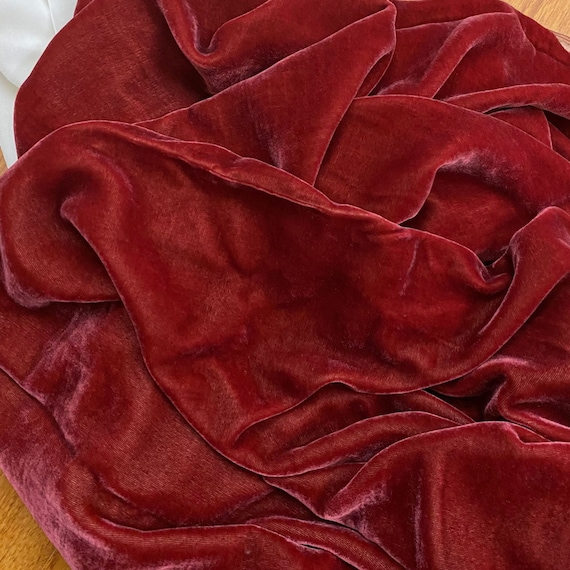
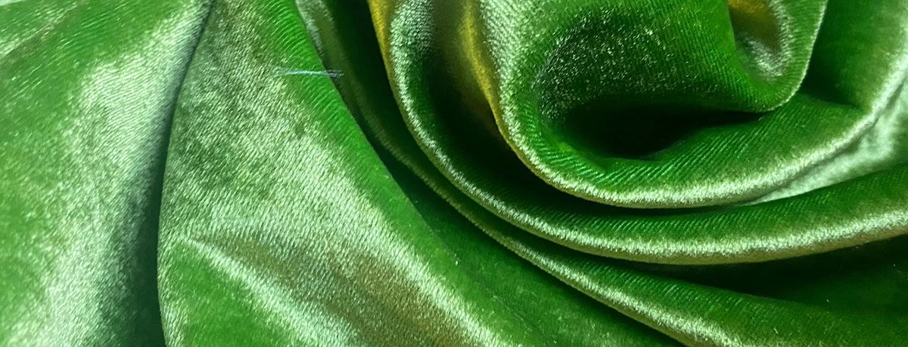
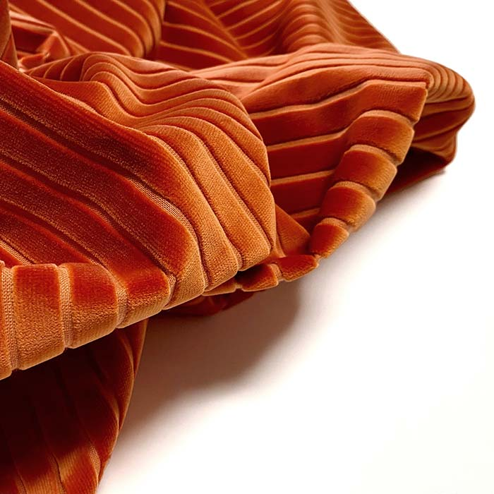
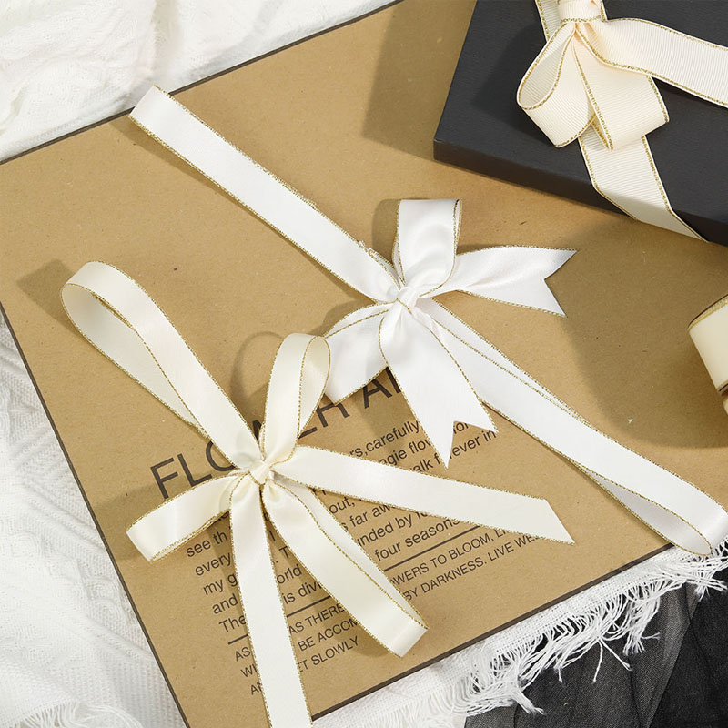

Add rich texture and opulent depth to your packaging, décor, and designs. Our velvet ribbon collection spans plush velvet, glitter velvet, and metallic finishes for every season and celebration.

Velvet ribbon's distinctive soft pile surface creates an immediate sense of luxury and tactile richness. The way it catches light — subtle, deep, velvety — transforms any package or décor arrangement into something premium.
Our velvet ribbons are crafted from high-quality polyester fibers that replicate the softness and drape of silk velvet at a fraction of the cost — making luxury accessible for gift packaging, fashion, home décor, and event styling.
Available in three premium varieties: Plush Velvet (deep, velvety pile), Glitter Velvet (velvet base with embedded glitter particles), and Metallic Velvet (velvet with a shimmering metallic finish).

Holiday Season Bestseller
Christmas velvet ribbons are one of our top export products — sold to retailers in the US, UK, Germany, and Australia.
Three distinct velvet finishes for different aesthetic needs
The classic velvet ribbon with a rich, soft pile surface. Available in 50+ deep, saturated colors. Perfect for luxury gift wrapping, wedding florals, and year-round décor applications.
A velvet base embedded with fine glitter particles that sparkle under light. The most popular choice for holiday gift packaging, Christmas décor, and festive celebrations.

Velvet ribbon with a metallic foil overlay creating a luminous, shimmering effect. Elegant and eye-catching for premium holiday packaging, awards, and special occasion gift wrapping.

Curated seasonal colors — rich reds, forest greens, royal golds, burgundy, midnight blue. Pre-packed seasonal sets available for wholesale buyers. The fastest-moving velvet category every Q4.
| Material | 100% Polyester (velvet pile) / Polyester + Glitter / Polyester + Metallic foil |
|---|---|
| Width Range | 9mm – 100mm |
| Standard Widths | 9mm, 16mm, 22mm, 25mm, 36mm, 50mm, 75mm |
| Plush Velvet Colors | 50+ stock colors (reds, greens, blues, metallics, neutrals) |
| Glitter Options | Gold, Silver, Copper, Holographic, Multi-color |
| Pile Height | Standard pile (0.5–1mm), Deep pile (1–2mm) for premium grades |
| Minimum Order | 500 meters per color/type |
| Sample Lead Time | 3–5 working days |
| Production Lead Time | 12–20 working days |
| Certifications | OEKO-TEX® Standard 100, ISO 9001 |
Dedicated velvet weaving lines with specialist finishing equipment for consistent, premium-quality velvet ribbons.
Pre-built holiday velvet inventory in trending seasonal colors. Fast shipping for last-minute Christmas orders.
Each batch color-checked against reference standards. Large orders are produced in a single dye lot for color consistency.
Factory-direct pricing with volume discounts. Better quality velvet at better prices than trading companies.
Specialized logistics for seasonal products — we understand Q4 deadlines and deliver on time for the Christmas trade season.
Custom velvet colors matched to your Pantone. Custom printed velvet designs for brand packaging and promotional campaigns.
Glitter velvet has fine glitter particles (like craft glitter) embedded in the velvet pile — creating a sparkling, festive effect. Metallic velvet has a smooth metallic foil layer pressed onto the velvet surface, giving a more refined, luminous sheen.
Our glitter velvet ribbons are finished with a fixative treatment that minimizes glitter shedding under normal use. Some initial glitter shedding may occur during cutting and handling — this is normal and does not indicate a quality issue.
Velvet ribbons are primarily designed for indoor use. Outdoor exposure to moisture will damage the velvet pile. For outdoor applications, we recommend our satin or grosgrain ribbons.
For hand-tied bows: 25mm–50mm widths are most versatile. For large decorative bows: 75mm–100mm widths create dramatic impact. We offer free bow-tying technique guides with bulk orders.
Request free velvet ribbon samples and our holiday color catalog today.
Request Free Sample →